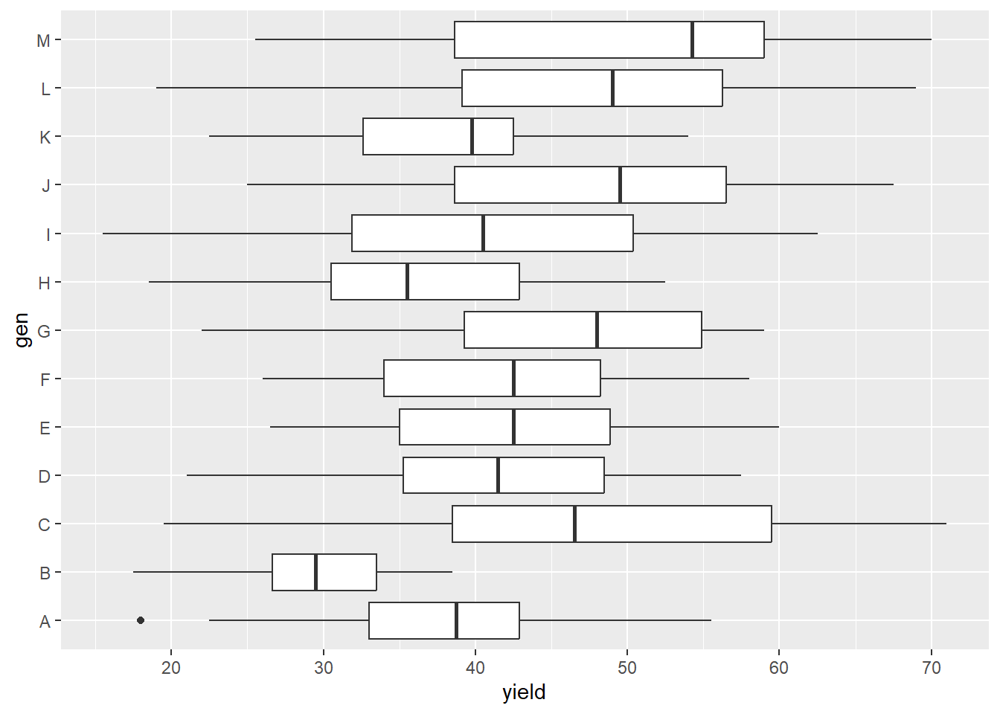
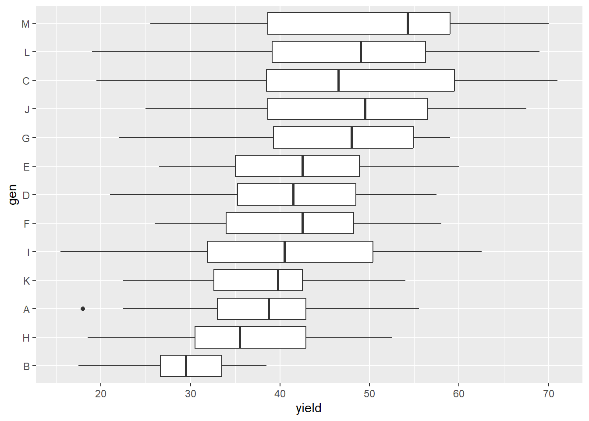
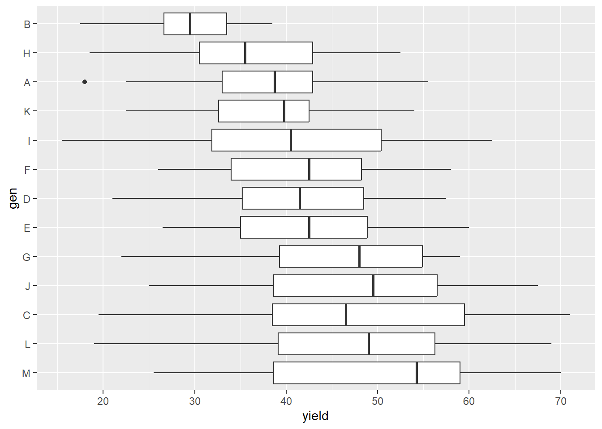
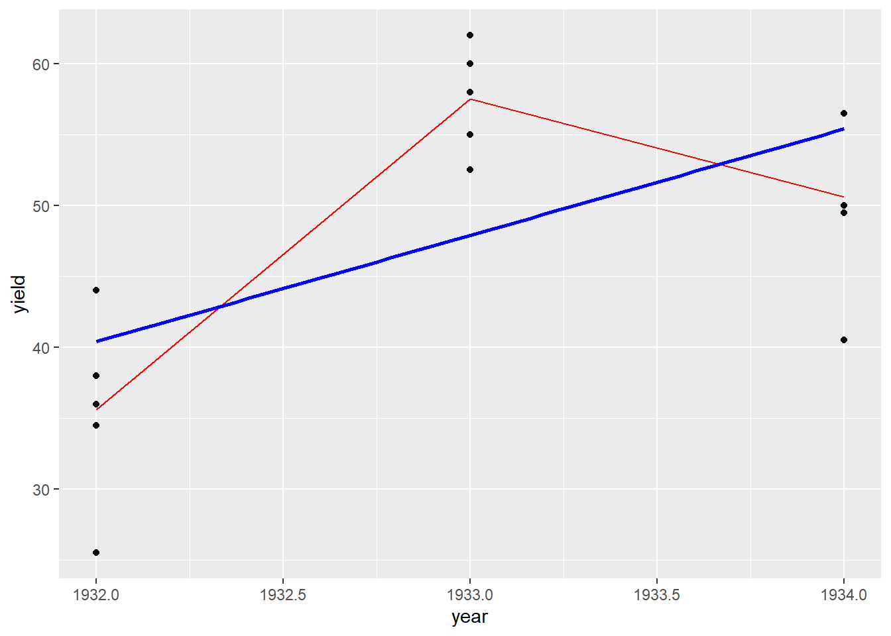
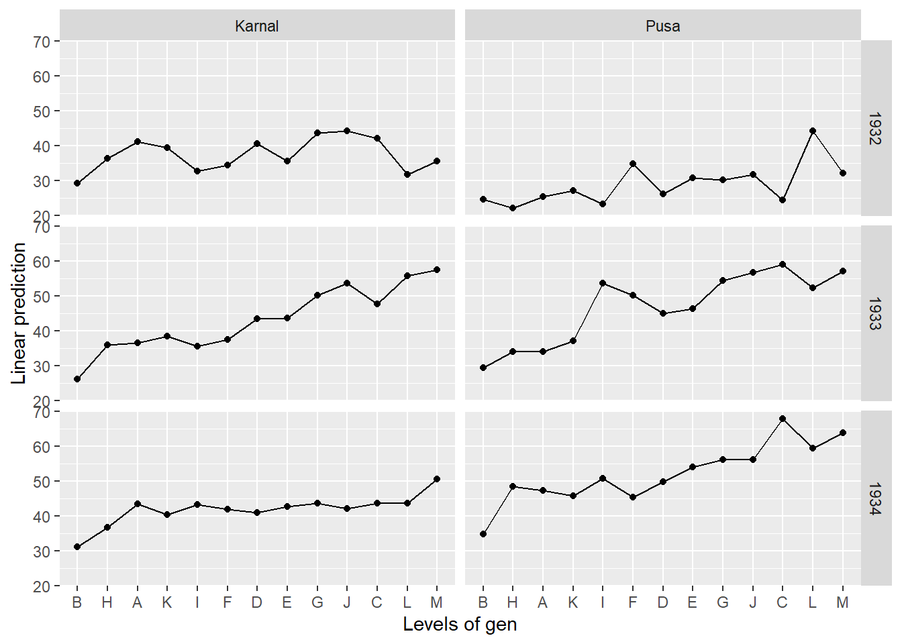
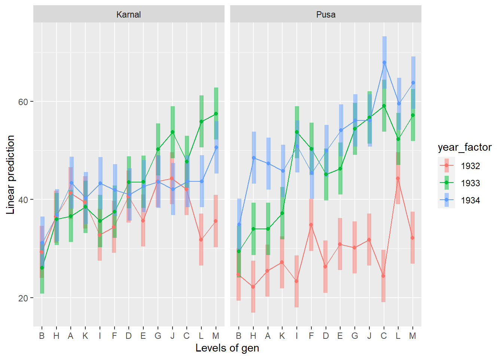

oats_data<-read.csv("oats.csv")Some advice and tips for getting more out of R, and improving your code, analysis and output
Objectives and summary of session
I have some data from a very standard experimental design and want to do some analysis in R. We have an RCBD (Randomised Complete Block Design) with 13 varieties of oats in 5 blocks (coded as “A”-“M”), which was repeated in two locations, over three seasons. I can ‘do’ my analysis in a very quick and dirty few lines of code… like this!
oats_data<-read.csv("oats.csv")
boxplot(yield~gen,oats_data)
library(tidyverse)
oats_data %>%
group_by(env,year,gen) %>%
summarise(mean(yield))
lm(yield~gen*year*env,data=oats_data) %>%
anova()
Hurray we have done our analysis!
Only it is actually incorrect, has some pretty messy output, is hard to interpret and share with others, and we kind of don’t really understand what we have done of what is really going on in the data. If all we care about is getting some (wrong) p-values then this is OK I suppose; but we can do a whole lot better!
The main objective in this guide is to go through some helpful tips and tricks for using R, that you may not have been taught about when learning R. Pretty much nothing that is covered in this guide is “essential” to the successful usage of R - but everything covered will improve your own understanding of your analysis, improve the quality of your outputs and reduce the amount of time you spend manually tidying up your tables/graphs/reports and help you to build reproduceable and well documented script files.
Hopefully for many of you the design and analysis we are talking about here, with a multi-season multi-location multi-variety experiment, is quite a familiar one. The idea here is that we have a relatively standard problem, but with enough complexity to make it at least somewhat realistic, to try to put the focus away from the stats and more on some tips and tricks of working with R. And if it is not familiar then this is also not a problem, nearly everything we are going to talk about will be relevant to anyone using R, regardless of what sort of data or analysis you do happen to be working with!
My general workflow for this analysis is pretty straightforward - I will bring in the data, make some summary statistics and exploratory plots, fit a model, consider a few options for models, and make some inferences from the model.
Since my main focus here is on other things, the ‘analysis’ code I am using here in this example is in no way meant to be an exhaustive set of everything that I might want to do with this data. But maybe the first initial headline analysis I am working on.
Summary of the Main Tips/Tricks Covered In This Session (with links to resources)
Organisation of data and code - keep data clean, structured and tidy. Keep code clean, structured and tidy. Keep R updated. Use project files. “What They Forgot to Teach You About R” - https://rstats.wtf/
Modifying plots to make them more better or more interpretable often requires modifying the data; not just the plot- e.g. we will demonstrate use of
reorder()https://r-graphics.org/chapter-dataprepMaking tables or output look cleaner and more presentable using
gt()so it looks like a table not just a code dump https://gt.albert-rapp.de/A classic trap to avoid - making sure coded factors are not misinterpreted as numbers https://stats4sd.org/blog/22
Flexible post-hoc analysis of models with
emmeans()- same code will work on hundreds of different types of model. Not limited in the way that most equivalent packages are. https://aosmith.rbind.io/2019/03/25/getting-started-with-emmeans/Making good use of markdown documents - writing explanations not just shorthand comments; resizing plots; using formatting options. Build the report as you working on the analysis - easier to share, update and reproduce. https://www.rstudio.com/wp-content/uploads/2015/02/rmarkdown-cheatsheet.pdf
Preliminaries - Loading in the data
Before we get started properly let’s take a quick look at the data which was pulled from the shaw.oats data frame within the agridat library. I’ve written the code above to be a bit more realistic in a workflow - assuming we are pulling in data from another file - but if you want to follow along with the code you can load in the data directly from the agridat library instead: oats_data<-data("shaw.oats")
An oat trial in India of 11 hybrid oats compared to 2 established high-yielding varieties, labelled L and M. The trial was conducted at 2 locations. The size and exact locations of the plots varied from year to year.
At Pusa, the crop was grown without irrigation. At Karnal the crop was given 2-3 irrigations. Five blocks were used, each plot 1000 square feet. In 1932, variety L was high-yielding at Pusa, but low-yielding at Karnal.
Shaw used this data to illustrate ANOVA for a multi-environment trial.
head(oats_data) env year block gen yield
1 Pusa 1932 B1 A 26.5
2 Pusa 1932 B2 A 38.0
3 Pusa 1932 B3 A 22.5
4 Pusa 1932 B4 A 18.0
5 Pusa 1932 B5 A 22.5
6 Pusa 1933 B1 A 37.5Source F.J.F. Shaw (1936). A Handbook of Statistics For Use In Plant Breeding and Agricultural Problems. The Imperial Council of Agricultural Research, India. https://archive.org/details/HandbookStatistics1936/page/n12 P. 126
The data is in a clean single rectangle, with short headers than are easily understood and written consistently (all lower case single words).
Tip 1 - Working on Your Setup
As a starting point, if you are not already using RStudio instead of ‘just’ R, because that is what your professor taught you, then you should definitely be using RStudio!
And as a next step - if you are not already using project files as a way of organising together data, scripts, packages and outputs linked to a single common analysis project then you should definitely be using project files.
If you find yourself annoyed when you realise that the code your colleague has sent has lots of lines of code like. read.csv("C:/Users/MyComputer/MyFolder/AnotherFolder/TheFile.csv) which will need to be modified every time it is run on a different system then project files could be for you! You will only ever need to see code that looks like read.csv("TheFile.csv") as long as you set up your project correctly.
And if you are used to using .R files, then you should probably get also start to get used to using .Rmd or .Qmd files. These markdown formats can help you break up your analysis more intuitively, give better space for self-documenting rather than relying on comments, and give you the outputs in line with the code. It makes your coding and analysis part of the same flow, rather than separating them out.
Part of the setup process is also thinking about package management. Don’t load the package as and when you need it within your script. If it starts getting long then you can quickly lose track and annoy/confuse other people who are following along with your code. I am going to use all of these packages at some point. I did not know exactly which packages I would be using when I started writing this script.
But whenever I found that I needed another package I came back to this point and added it in up in this chunk.
library(tidyverse)
library(emmeans)
library(multcomp)
library(gt)For those wanting to take their version control and package management onto the next level - this is where you might start exploring git or renv. These are really useful tools to know about, and in particular if you are going to be working within a team rather than on your own, once you have got to grips with the basics of using R. Some reference links here for you to start exploring more for Git: https://r-bio.github.io/intro-git-rstudio/ and for renv : https://rstudio.github.io/renv/articles/renv.html
Tip 2 - Improving Exploratory Plots
Let’s start with a quick plot of the overall treatment distributions with some boxplots
oats_data %>%
ggplot(aes(y=gen,x=yield))+
geom_boxplot()
Initial inspection shows a few higher yielding varieties jumping out, but the main distinction being one much lower yielding variety from out of the list of 13. But the trends are a little hard to spot, since the coding of genotypes from “A” to “M” is largely arbitrary - it is fairly rare in data analysis for alphabetical order to actually be the most intuitive or informative option for display.
What might be nicer here is if we turn this into a “caterpillar” style box plot where the genotypes are ordered not by name (which is totally arbitrary) but by average yield. This is an example of something where to change the plot we actually have to change the data.
A categorical axis is always presented in alphabetical order (if the underlying variable is a character) or in factor level order (if the underlying variable is a factor). By default factor level order will also be alphabetical - but this can be changed (unlike a character variable which will always be in alphabetical order).
This is where piping into the plot becomes very nice - we may not want to change our underlying dataset but for the purpose of the plot we want to have a reordered version of gen. The reorder() function works fairly intuitively - first give the name of the categorical variable and then the name of the variable to set the order by. By default it will order by the mean values, but you can also change this to be by any summary value, e.g. if you wanted to order by maximum max, minimum min, median median, frequency length etc.
oats_data %>%
mutate(gen=reorder(gen,yield)) %>%
ggplot(aes(y=gen,x=yield))+
geom_boxplot()
Picking out the “High” and the “Low” yielding genotypes here is now quite a lot easier, as well as seeing how that group of higher yielding genotypes all do appear to have quite similar distributions.
If you wanted the caterpillar the other way around - highest on bottom lowest on top there are a few options of how you could solve that issue with slightly sneaky data tricks e.g.add an extra call to factor and reverse the levels, change the call to reorder to order based on -1*yield instead of yield. But in this instance probably the simplest way to switch is through using a call to scale_y_discrete(limits=rev) - again a very useful trick that is often overlooked! This time it is modifying the plot itself, rather than the data to reverse the order of the axis.
oats_data %>%
mutate(gen=reorder(gen,yield)) %>%
ggplot(aes(y=gen,x=yield))+
geom_boxplot() +
scale_y_discrete(limits=rev)
Remember when piping from the data into a plot that no changes are made to the underlying data - if I wanted to make a more permanent change to the order of my variables I would need to assign the updated data to a new object - in this case I will over-write my existing data set. It is always worth thinking carefully about doing this! But the advantage of having this reproducible script file is that if I do make a mistake I can just start again from the top of my code.
oats_data<-mutate(oats_data,gen=reorder(gen,yield))Tip 3 - Making Table Look a Bit Nicer In Our Reports
Of course I have multiple locations and multiple years in this data set, and this is something I should account for in my analysis. So I might want a three way table looking at the values by site and location. I can get lots of lovely summary statistics by using group_by and summarise:
(Note that the order of genotypes is now based from overall lowest mean to overall highest based on the previous code.)
oats_data %>%
group_by(env,year,gen) %>%
summarise(n=n(),mean=mean(yield),sd=sd(yield))# A tibble: 78 × 6
# Groups: env, year [6]
env year gen n mean sd
<chr> <int> <fct> <int> <dbl> <dbl>
1 Karnal 1932 B 5 29.3 5.14
2 Karnal 1932 H 5 36.5 6.59
3 Karnal 1932 A 5 41.3 3.91
4 Karnal 1932 K 5 39.4 8.84
5 Karnal 1932 I 5 32.8 5.84
6 Karnal 1932 F 5 34.4 5.54
7 Karnal 1932 D 5 40.6 5.07
8 Karnal 1932 E 5 35.7 6.17
9 Karnal 1932 G 5 43.7 6.77
10 Karnal 1932 J 5 44.3 6.05
# ℹ 68 more rowsBut this output is kind of overwhelming and definitely not the most efficient way of presenting this information with a 78 row table with far too many decimals and lots of repeated values and labels!
There are built in functions to make ‘pretty’ summary tables - but usually I find I want a bit more control over exactly what is included and how it is laid out so it is really useful to know how to manipulate tables into the shape you want in R and present them nicely. It will save you a lot of time in the future - especially if you have ever found yourself copy-pasting numbers from R output into tables (please never ever do this, it will make me sad).
So it is useful to know how to build something yourself - pivot_ can be very powerful here for modifying the content and shape within R. I am going to ask it to reshape my data and have one column for each statistic in each year. This will give me a more manageable set of dimensions. I am going to assign it to an object called table0, since I will be re-using this initial summary table later on as the basis for a more presentable looking table.
table0<-oats_data %>%
group_by(env,year,gen) %>%
summarise(mean=mean(yield),sd=sd(yield)) %>%
pivot_wider(names_from = year,values_from = c(mean,sd))
table0# A tibble: 26 × 8
# Groups: env [2]
env gen mean_1932 mean_1933 mean_1934 sd_1932 sd_1933 sd_1934
<chr> <fct> <dbl> <dbl> <dbl> <dbl> <dbl> <dbl>
1 Karnal B 29.3 26.1 31.2 5.14 3.83 4.67
2 Karnal H 36.5 36 36.8 6.59 7.80 4.92
3 Karnal A 41.3 36.6 43.4 3.91 4.56 7.50
4 Karnal K 39.4 38.5 40.3 8.84 3.91 8.25
5 Karnal I 32.8 35.6 43.3 5.84 2.95 6.33
6 Karnal F 34.4 37.5 41.9 5.54 3.35 8.20
7 Karnal D 40.6 43.5 41 5.07 7.42 7.71
8 Karnal E 35.7 43.6 42.7 6.17 5.86 8.14
9 Karnal G 43.7 50.2 43.6 6.77 4.38 7.65
10 Karnal J 44.3 53.7 42.1 6.05 5.83 5.72
# ℹ 16 more rowsOn it’s own this still is a bit overwhelming but it is now in a better position to tidy up!.
Lots of functions now exist to improve appearance of tables; although it is an area of ongoing development so there are a lot of different options out there. I think the best to learn about would probably be the gt() package - it is designed as a “grammar of tables” similar to how ggplot is the “grammar of graphs” and developed by the RStudio team. Outputting a table into HTML/PDF/Word using gt will make it look a whole lot nicer, and the basic functionality is very simple to use.
If you just want the table to “look like a table” when you output your results, rather than “looking like R output”, then the syntax is very very simple!
table0 %>%
gt()| gen | mean_1932 | mean_1933 | mean_1934 | sd_1932 | sd_1933 | sd_1934 |
|---|---|---|---|---|---|---|
| Karnal | ||||||
| B | 29.3 | 26.1 | 31.2 | 5.142956 | 3.830796 | 4.671723 |
| H | 36.5 | 36.0 | 36.8 | 6.585970 | 7.802243 | 4.919350 |
| A | 41.3 | 36.6 | 43.4 | 3.914716 | 4.560702 | 7.503333 |
| K | 39.4 | 38.5 | 40.3 | 8.841663 | 3.905125 | 8.250758 |
| I | 32.8 | 35.6 | 43.3 | 5.837380 | 2.945335 | 6.330482 |
| F | 34.4 | 37.5 | 41.9 | 5.538502 | 3.354102 | 8.196036 |
| D | 40.6 | 43.5 | 41.0 | 5.067050 | 7.424621 | 7.705518 |
| E | 35.7 | 43.6 | 42.7 | 6.170494 | 5.856620 | 8.144016 |
| G | 43.7 | 50.2 | 43.6 | 6.769417 | 4.381780 | 7.651797 |
| J | 44.3 | 53.7 | 42.1 | 6.047727 | 5.826663 | 5.716205 |
| C | 42.1 | 47.7 | 43.7 | 3.748333 | 7.310951 | 7.910436 |
| L | 31.8 | 55.9 | 43.7 | 8.415759 | 8.763561 | 6.833740 |
| M | 35.6 | 57.5 | 50.6 | 6.702611 | 3.807887 | 6.580274 |
| Pusa | ||||||
| B | 24.7 | 29.4 | 34.9 | 7.111610 | 3.542598 | 3.560197 |
| H | 22.2 | 34.0 | 48.5 | 4.919350 | 5.291503 | 3.921097 |
| A | 25.5 | 34.0 | 47.3 | 7.607562 | 4.974937 | 6.016644 |
| K | 27.2 | 37.2 | 45.8 | 7.319495 | 7.471613 | 3.154362 |
| I | 23.3 | 53.7 | 50.8 | 5.552027 | 5.707451 | 4.508326 |
| F | 34.8 | 50.3 | 45.4 | 8.519096 | 4.338779 | 4.814042 |
| D | 26.3 | 45.1 | 49.9 | 7.546522 | 9.672125 | 5.284411 |
| E | 30.9 | 46.3 | 54.1 | 5.236888 | 6.047727 | 5.727128 |
| G | 30.2 | 54.4 | 56.1 | 5.707451 | 2.162175 | 2.382226 |
| J | 31.8 | 56.7 | 56.1 | 5.608030 | 3.684427 | 6.985700 |
| C | 24.4 | 59.1 | 67.9 | 3.612478 | 2.355844 | 2.329163 |
| L | 44.3 | 52.3 | 59.5 | 10.353743 | 6.210878 | 5.989574 |
| M | 32.2 | 57.2 | 63.8 | 6.230971 | 2.706474 | 4.644890 |
Because table0 was grouped by env using group_by in a previous step the output has carried these groups forward - you can see the separation of sections for the 2 locations. If the data wasn’t grouped before piping into gt, the groups could also have been added using the groupname_col= argument - gt(groupname_col = "env") instead
It is also worth spending a bit of time to learn other gt functions to make your table ‘presentation’ ready using formats, spanners, groups, and labels and you can quickly start to create a much more ‘human-readable’ looking piece of output.
table1<-table0 %>%
gt() %>%
fmt_number(decimals=1)
table1| gen | mean_1932 | mean_1933 | mean_1934 | sd_1932 | sd_1933 | sd_1934 |
|---|---|---|---|---|---|---|
| Karnal | ||||||
| B | 29.3 | 26.1 | 31.2 | 5.1 | 3.8 | 4.7 |
| H | 36.5 | 36.0 | 36.8 | 6.6 | 7.8 | 4.9 |
| A | 41.3 | 36.6 | 43.4 | 3.9 | 4.6 | 7.5 |
| K | 39.4 | 38.5 | 40.3 | 8.8 | 3.9 | 8.3 |
| I | 32.8 | 35.6 | 43.3 | 5.8 | 2.9 | 6.3 |
| F | 34.4 | 37.5 | 41.9 | 5.5 | 3.4 | 8.2 |
| D | 40.6 | 43.5 | 41.0 | 5.1 | 7.4 | 7.7 |
| E | 35.7 | 43.6 | 42.7 | 6.2 | 5.9 | 8.1 |
| G | 43.7 | 50.2 | 43.6 | 6.8 | 4.4 | 7.7 |
| J | 44.3 | 53.7 | 42.1 | 6.0 | 5.8 | 5.7 |
| C | 42.1 | 47.7 | 43.7 | 3.7 | 7.3 | 7.9 |
| L | 31.8 | 55.9 | 43.7 | 8.4 | 8.8 | 6.8 |
| M | 35.6 | 57.5 | 50.6 | 6.7 | 3.8 | 6.6 |
| Pusa | ||||||
| B | 24.7 | 29.4 | 34.9 | 7.1 | 3.5 | 3.6 |
| H | 22.2 | 34.0 | 48.5 | 4.9 | 5.3 | 3.9 |
| A | 25.5 | 34.0 | 47.3 | 7.6 | 5.0 | 6.0 |
| K | 27.2 | 37.2 | 45.8 | 7.3 | 7.5 | 3.2 |
| I | 23.3 | 53.7 | 50.8 | 5.6 | 5.7 | 4.5 |
| F | 34.8 | 50.3 | 45.4 | 8.5 | 4.3 | 4.8 |
| D | 26.3 | 45.1 | 49.9 | 7.5 | 9.7 | 5.3 |
| E | 30.9 | 46.3 | 54.1 | 5.2 | 6.0 | 5.7 |
| G | 30.2 | 54.4 | 56.1 | 5.7 | 2.2 | 2.4 |
| J | 31.8 | 56.7 | 56.1 | 5.6 | 3.7 | 7.0 |
| C | 24.4 | 59.1 | 67.9 | 3.6 | 2.4 | 2.3 |
| L | 44.3 | 52.3 | 59.5 | 10.4 | 6.2 | 6.0 |
| M | 32.2 | 57.2 | 63.8 | 6.2 | 2.7 | 4.6 |
And bring lets now bring in ‘spanners’ for each year to organise the structure a little more. The terminology of ‘spanner’ may be unfamiliar, and perhaps a little unintuitive here, but from looking at the output it should immediately become clear what this means when you see the result:
table2<-table1 %>%
tab_spanner(label="1932",columns=contains("1932"))%>%
tab_spanner(label="1933",columns=contains("1933")) %>%
tab_spanner(label="1934",columns=contains("1934"))
table2| gen | 1932 | 1933 | 1934 | |||
|---|---|---|---|---|---|---|
| mean_1932 | sd_1932 | mean_1933 | sd_1933 | mean_1934 | sd_1934 | |
| Karnal | ||||||
| B | 29.3 | 5.1 | 26.1 | 3.8 | 31.2 | 4.7 |
| H | 36.5 | 6.6 | 36.0 | 7.8 | 36.8 | 4.9 |
| A | 41.3 | 3.9 | 36.6 | 4.6 | 43.4 | 7.5 |
| K | 39.4 | 8.8 | 38.5 | 3.9 | 40.3 | 8.3 |
| I | 32.8 | 5.8 | 35.6 | 2.9 | 43.3 | 6.3 |
| F | 34.4 | 5.5 | 37.5 | 3.4 | 41.9 | 8.2 |
| D | 40.6 | 5.1 | 43.5 | 7.4 | 41.0 | 7.7 |
| E | 35.7 | 6.2 | 43.6 | 5.9 | 42.7 | 8.1 |
| G | 43.7 | 6.8 | 50.2 | 4.4 | 43.6 | 7.7 |
| J | 44.3 | 6.0 | 53.7 | 5.8 | 42.1 | 5.7 |
| C | 42.1 | 3.7 | 47.7 | 7.3 | 43.7 | 7.9 |
| L | 31.8 | 8.4 | 55.9 | 8.8 | 43.7 | 6.8 |
| M | 35.6 | 6.7 | 57.5 | 3.8 | 50.6 | 6.6 |
| Pusa | ||||||
| B | 24.7 | 7.1 | 29.4 | 3.5 | 34.9 | 3.6 |
| H | 22.2 | 4.9 | 34.0 | 5.3 | 48.5 | 3.9 |
| A | 25.5 | 7.6 | 34.0 | 5.0 | 47.3 | 6.0 |
| K | 27.2 | 7.3 | 37.2 | 7.5 | 45.8 | 3.2 |
| I | 23.3 | 5.6 | 53.7 | 5.7 | 50.8 | 4.5 |
| F | 34.8 | 8.5 | 50.3 | 4.3 | 45.4 | 4.8 |
| D | 26.3 | 7.5 | 45.1 | 9.7 | 49.9 | 5.3 |
| E | 30.9 | 5.2 | 46.3 | 6.0 | 54.1 | 5.7 |
| G | 30.2 | 5.7 | 54.4 | 2.2 | 56.1 | 2.4 |
| J | 31.8 | 5.6 | 56.7 | 3.7 | 56.1 | 7.0 |
| C | 24.4 | 3.6 | 59.1 | 2.4 | 67.9 | 2.3 |
| L | 44.3 | 10.4 | 52.3 | 6.2 | 59.5 | 6.0 |
| M | 32.2 | 6.2 | 57.2 | 2.7 | 63.8 | 4.6 |
Then there are some nice functions for tidying things up with the labels, titles and styles. Since it is perfectly balanced trial with n=5 for all treatments in all environment/season combinations I will only put this in once for my final table in the subheader.
table2 %>%
cols_label(contains("mean")~"Mean",
contains("sd")~"SD",
"gen"="Genotype")%>%
tab_header("Oat Yield (kg/ha), Mean (SD)",subtitle = "RCBD design; n=5 blocks per site per season") %>%
opt_stylize(style = 3, color = 'gray')| Oat Yield (kg/ha), Mean (SD) | ||||||
| RCBD design; n=5 blocks per site per season | ||||||
| Genotype | 1932 | 1933 | 1934 | |||
|---|---|---|---|---|---|---|
| Mean | SD | Mean | SD | Mean | SD | |
| Karnal | ||||||
| B | 29.3 | 5.1 | 26.1 | 3.8 | 31.2 | 4.7 |
| H | 36.5 | 6.6 | 36.0 | 7.8 | 36.8 | 4.9 |
| A | 41.3 | 3.9 | 36.6 | 4.6 | 43.4 | 7.5 |
| K | 39.4 | 8.8 | 38.5 | 3.9 | 40.3 | 8.3 |
| I | 32.8 | 5.8 | 35.6 | 2.9 | 43.3 | 6.3 |
| F | 34.4 | 5.5 | 37.5 | 3.4 | 41.9 | 8.2 |
| D | 40.6 | 5.1 | 43.5 | 7.4 | 41.0 | 7.7 |
| E | 35.7 | 6.2 | 43.6 | 5.9 | 42.7 | 8.1 |
| G | 43.7 | 6.8 | 50.2 | 4.4 | 43.6 | 7.7 |
| J | 44.3 | 6.0 | 53.7 | 5.8 | 42.1 | 5.7 |
| C | 42.1 | 3.7 | 47.7 | 7.3 | 43.7 | 7.9 |
| L | 31.8 | 8.4 | 55.9 | 8.8 | 43.7 | 6.8 |
| M | 35.6 | 6.7 | 57.5 | 3.8 | 50.6 | 6.6 |
| Pusa | ||||||
| B | 24.7 | 7.1 | 29.4 | 3.5 | 34.9 | 3.6 |
| H | 22.2 | 4.9 | 34.0 | 5.3 | 48.5 | 3.9 |
| A | 25.5 | 7.6 | 34.0 | 5.0 | 47.3 | 6.0 |
| K | 27.2 | 7.3 | 37.2 | 7.5 | 45.8 | 3.2 |
| I | 23.3 | 5.6 | 53.7 | 5.7 | 50.8 | 4.5 |
| F | 34.8 | 8.5 | 50.3 | 4.3 | 45.4 | 4.8 |
| D | 26.3 | 7.5 | 45.1 | 9.7 | 49.9 | 5.3 |
| E | 30.9 | 5.2 | 46.3 | 6.0 | 54.1 | 5.7 |
| G | 30.2 | 5.7 | 54.4 | 2.2 | 56.1 | 2.4 |
| J | 31.8 | 5.6 | 56.7 | 3.7 | 56.1 | 7.0 |
| C | 24.4 | 3.6 | 59.1 | 2.4 | 67.9 | 2.3 |
| L | 44.3 | 10.4 | 52.3 | 6.2 | 59.5 | 6.0 |
| M | 32.2 | 6.2 | 57.2 | 2.7 | 63.8 | 4.6 |
See: https://gt.albert-rapp.de/getting_started for more.
Tip 4 - Make sure you know your data, and know what to expect in your output
I am going to fit a standard ANOVA model with a 3 way interaction between genotype and year and environment. As a quick aside, for those not aware, R makes no real distinction in what functions you use between an “ANOVA” or an “ANCOVA” or a “Multiple Linear Regression” - all of these are just different names for applying a standard linear model - lm(). And using the lm/glm/lmer family of functions in R gives us a whole lot more flexibility without getting bogged down in how to ‘name’ a particular model we can describe exactly how we want it to work - extending it very easily to all sorts of non-Gaussian link functions or different forms of hierarchical or longitudinal models.
In practice my advice is that I have never yet really found an instance where aov() would ever be my choice over lm() or lmer() - although I am sure many people may have been taught to use it when learning about statistics in R.
model1<-lm(yield~gen*year*env,data=oats_data)
summary(model1)
Call:
lm(formula = yield ~ gen * year * env, data = oats_data)
Residuals:
Min 1Q Median 3Q Max
-18.8500 -4.7417 -0.4333 4.3167 21.2000
Coefficients:
Estimate Std. Error t value Pr(>|t|)
(Intercept) -1807.483 4375.465 -0.413 0.679799
genH 1553.967 6187.842 0.251 0.801864
genA -181.733 6187.842 -0.029 0.976587
genK 977.033 6187.842 0.158 0.874633
genI -8303.533 6187.842 -1.342 0.180526
genF -5403.333 6187.842 -0.873 0.383164
genD 1462.583 6187.842 0.236 0.813293
genE -4917.350 6187.842 -0.795 0.427358
genG 1949.967 6187.842 0.315 0.752858
genJ 3980.483 6187.842 0.643 0.520482
genC 305.583 6187.842 0.049 0.960642
genL -9650.067 6187.842 -1.560 0.119809
genM -12642.117 6187.842 -2.043 0.041822 *
year 0.950 2.264 0.420 0.674977
envPusa -8021.150 6187.842 -1.296 0.195765
genH:year -0.800 3.201 -0.250 0.802809
genA:year 0.100 3.201 0.031 0.975098
genK:year -0.500 3.201 -0.156 0.875974
genI:year 4.300 3.201 1.343 0.180088
genF:year 2.800 3.201 0.875 0.382367
genD:year -0.750 3.201 -0.234 0.814902
genE:year 2.550 3.201 0.797 0.426250
genG:year -1.000 3.201 -0.312 0.754939
genJ:year -2.050 3.201 -0.640 0.522351
genC:year -0.150 3.201 -0.047 0.962654
genL:year 5.000 3.201 1.562 0.119239
genM:year 6.550 3.201 2.046 0.041517 *
genH:envPusa -17109.383 8750.929 -1.955 0.051389 .
genA:envPusa -11023.733 8750.929 -1.260 0.208639
genK:envPusa -9088.567 8750.929 -1.039 0.299741
genI:envPusa -8403.983 8750.929 -0.960 0.337564
genF:envPusa 5030.567 8750.929 0.575 0.565768
genD:envPusa -14402.917 8750.929 -1.646 0.100719
genE:envPusa -7633.050 8750.929 -0.872 0.383688
genG:envPusa -17106.783 8750.929 -1.955 0.051424 .
genJ:envPusa -17589.600 8750.929 -2.010 0.045223 *
genC:envPusa -32469.233 8750.929 -3.710 0.000242 ***
genL:envPusa 4839.933 8750.929 0.553 0.580577
genM:envPusa -8019.583 8750.929 -0.916 0.360097
year:envPusa 4.150 3.201 1.296 0.195720
genH:year:envPusa 8.850 4.527 1.955 0.051421 .
genA:year:envPusa 5.700 4.527 1.259 0.208871
genK:year:envPusa 4.700 4.527 1.038 0.299925
genI:year:envPusa 4.350 4.527 0.961 0.337302
genF:year:envPusa -2.600 4.527 -0.574 0.566136
genD:year:envPusa 7.450 4.527 1.646 0.100768
genE:year:envPusa 3.950 4.527 0.873 0.383545
genG:year:envPusa 8.850 4.527 1.955 0.051421 .
genJ:year:envPusa 9.100 4.527 2.010 0.045214 *
genC:year:envPusa 16.800 4.527 3.711 0.000241 ***
genL:year:envPusa -2.500 4.527 -0.552 0.581158
genM:year:envPusa 4.150 4.527 0.917 0.359955
---
Signif. codes: 0 '***' 0.001 '**' 0.01 '*' 0.05 '.' 0.1 ' ' 1
Residual standard error: 7.158 on 338 degrees of freedom
Multiple R-squared: 0.6713, Adjusted R-squared: 0.6217
F-statistic: 13.53 on 51 and 338 DF, p-value: < 2.2e-16anova(model1)Analysis of Variance Table
Response: yield
Df Sum Sq Mean Sq F value Pr(>F)
gen 12 12297.2 1024.8 20.0004 < 2.2e-16 ***
year 1 12399.3 12399.3 241.9986 < 2.2e-16 ***
env 1 345.4 345.4 6.7404 0.009837 **
gen:year 12 1549.6 129.1 2.5203 0.003447 **
gen:env 12 1314.2 109.5 2.1374 0.014427 *
year:env 1 5795.2 5795.2 113.1058 < 2.2e-16 ***
gen:year:env 12 1662.1 138.5 2.7033 0.001694 **
Residuals 338 17318.1 51.2
---
Signif. codes: 0 '***' 0.001 '**' 0.01 '*' 0.05 '.' 0.1 ' ' 1I can fit my model and use summary() and anova() to get most of the sort of output I might be interested in. Everything runs - no errors - lots of highly significant p-values.
But does anything look a bit odd here…? Because it should!
The model is incorrect, and absolutely not what I wanted, but unless we knew why it would not be particularly obvious from what we have done here.
Take a closer look at the model coefficients - the intercept of the model is -1900. There are some outrageously large looking estimates for some of the parameters when you go back and compare against the data where the range of yields goes from 15 to 65.
The real give away is in the number of parameters, and degrees of freedom for year variable. This is being treated as if it is a continuous number I.e. it is assessing for a ‘one unit’ increase in year what would we expect to happen to yield. In reality, we would unquestionably be more interested in considering year as a factor for this analysis - considering each year as a separate group.
The class of variable when it is used in a model is important! It will determine how it is being treated.
Let’s just look at one site to show just how difference the models are here. It is very worthwhile being comfortable with basic data manipulation and plotting functions so you can start to explore your data in all sorts of different ways if and when you see something a little odd or unexpected.
oats_data %>%
filter(gen=="M" & env=="Karnal") %>%
group_by(year) %>%
summarise(yield=mean(yield)) %>%
ggplot(aes(y=yield,x=year))+
geom_point(data=filter(oats_data,gen=="M" & env=="Karnal")) +
geom_line(col="red")+
geom_smooth(method="lm",col="blue",se=FALSE)
The blue line is what is being fitted in the previous model - considering the year on year trend as a linear effect. But for genotype A this is very inappropriate! It reduced from 1932-33 and then increased from 1933-34 - very much not a linear effect. And with just 3 years we would be incredibly stupid to even consider fitting a non-linear effect of year.
So with a trial like this we are not interested in looking at the year on year trend as a continuous trend - we are considering the three years as being representative of different environmental conditions. Even though year is a number we do not want to treat it as such - instead we should be treating it as a factor. Even though we created a model with no errors/warnings and lots of significant p-values, it was ultimately completely useless.
So let’s try again:
oats_data<-mutate(oats_data,year_factor=factor(year))
model2<- lm(yield~gen*year_factor*env,data=oats_data)
summary(model2)
Call:
lm(formula = yield ~ gen * year_factor * env, data = oats_data)
Residuals:
Min 1Q Median 3Q Max
-13.0 -3.7 -0.2 3.4 14.7
Coefficients:
Estimate Std. Error t value Pr(>|t|)
(Intercept) 29.300 2.696 10.867 < 2e-16 ***
genH 7.200 3.813 1.888 0.059923 .
genA 12.000 3.813 3.147 0.001809 **
genK 10.100 3.813 2.649 0.008490 **
genI 3.500 3.813 0.918 0.359387
genF 5.100 3.813 1.337 0.182036
genD 11.300 3.813 2.963 0.003276 **
genE 6.400 3.813 1.678 0.094266 .
genG 14.400 3.813 3.776 0.000190 ***
genJ 15.000 3.813 3.934 0.000103 ***
genC 12.800 3.813 3.357 0.000886 ***
genL 2.500 3.813 0.656 0.512543
genM 6.300 3.813 1.652 0.099500 .
year_factor1933 -3.200 3.813 -0.839 0.401993
year_factor1934 1.900 3.813 0.498 0.618636
envPusa -4.600 3.813 -1.206 0.228590
genH:year_factor1933 2.700 5.393 0.501 0.616941
genA:year_factor1933 -1.500 5.393 -0.278 0.781072
genK:year_factor1933 2.300 5.393 0.427 0.670027
genI:year_factor1933 6.000 5.393 1.113 0.266716
genF:year_factor1933 6.300 5.393 1.168 0.243586
genD:year_factor1933 6.100 5.393 1.131 0.258843
genE:year_factor1933 11.100 5.393 2.058 0.040382 *
genG:year_factor1933 9.700 5.393 1.799 0.073020 .
genJ:year_factor1933 12.600 5.393 2.337 0.020095 *
genC:year_factor1933 8.800 5.393 1.632 0.103713
genL:year_factor1933 27.300 5.393 5.063 7.09e-07 ***
genM:year_factor1933 25.100 5.393 4.655 4.81e-06 ***
genH:year_factor1934 -1.600 5.393 -0.297 0.766888
genA:year_factor1934 0.200 5.393 0.037 0.970438
genK:year_factor1934 -1.000 5.393 -0.185 0.853003
genI:year_factor1934 8.600 5.393 1.595 0.111770
genF:year_factor1934 5.600 5.393 1.038 0.299855
genD:year_factor1934 -1.500 5.393 -0.278 0.781072
genE:year_factor1934 5.100 5.393 0.946 0.345007
genG:year_factor1934 -2.000 5.393 -0.371 0.710977
genJ:year_factor1934 -4.100 5.393 -0.760 0.447644
genC:year_factor1934 -0.300 5.393 -0.056 0.955670
genL:year_factor1934 10.000 5.393 1.854 0.064623 .
genM:year_factor1934 13.100 5.393 2.429 0.015693 *
genH:envPusa -9.700 5.393 -1.799 0.073020 .
genA:envPusa -11.200 5.393 -2.077 0.038625 *
genK:envPusa -7.600 5.393 -1.409 0.159726
genI:envPusa -4.900 5.393 -0.909 0.364230
genF:envPusa 5.000 5.393 0.927 0.354536
genD:envPusa -9.700 5.393 -1.799 0.073020 .
genE:envPusa -0.200 5.393 -0.037 0.970438
genG:envPusa -8.900 5.393 -1.650 0.099862 .
genJ:envPusa -7.900 5.393 -1.465 0.143931
genC:envPusa -13.100 5.393 -2.429 0.015693 *
genL:envPusa 17.100 5.393 3.171 0.001670 **
genM:envPusa 1.200 5.393 0.223 0.824047
year_factor1933:envPusa 7.900 5.393 1.465 0.143931
year_factor1934:envPusa 8.300 5.393 1.539 0.124778
genH:year_factor1933:envPusa 4.400 7.626 0.577 0.564384
genA:year_factor1933:envPusa 5.300 7.626 0.695 0.487590
genK:year_factor1933:envPusa 3.000 7.626 0.393 0.694307
genI:year_factor1933:envPusa 19.700 7.626 2.583 0.010244 *
genF:year_factor1933:envPusa 4.500 7.626 0.590 0.555570
genD:year_factor1933:envPusa 8.000 7.626 1.049 0.294983
genE:year_factor1933:envPusa -0.400 7.626 -0.052 0.958203
genG:year_factor1933:envPusa 9.800 7.626 1.285 0.199730
genJ:year_factor1933:envPusa 7.600 7.626 0.997 0.319748
genC:year_factor1933:envPusa 21.200 7.626 2.780 0.005768 **
genL:year_factor1933:envPusa -24.000 7.626 -3.147 0.001809 **
genM:year_factor1933:envPusa -4.800 7.626 -0.629 0.529542
genH:year_factor1934:envPusa 17.700 7.626 2.321 0.020934 *
genA:year_factor1934:envPusa 11.400 7.626 1.495 0.135965
genK:year_factor1934:envPusa 9.400 7.626 1.233 0.218656
genI:year_factor1934:envPusa 8.700 7.626 1.141 0.254827
genF:year_factor1934:envPusa -5.200 7.626 -0.682 0.495834
genD:year_factor1934:envPusa 14.900 7.626 1.954 0.051619 .
genE:year_factor1934:envPusa 7.900 7.626 1.036 0.301050
genG:year_factor1934:envPusa 17.700 7.626 2.321 0.020934 *
genJ:year_factor1934:envPusa 18.200 7.626 2.387 0.017605 *
genC:year_factor1934:envPusa 33.600 7.626 4.406 1.45e-05 ***
genL:year_factor1934:envPusa -5.000 7.626 -0.656 0.512543
genM:year_factor1934:envPusa 8.300 7.626 1.088 0.277279
---
Signif. codes: 0 '***' 0.001 '**' 0.01 '*' 0.05 '.' 0.1 ' ' 1
Residual standard error: 6.029 on 312 degrees of freedom
Multiple R-squared: 0.7847, Adjusted R-squared: 0.7316
F-statistic: 14.77 on 77 and 312 DF, p-value: < 2.2e-16anova(model2)Analysis of Variance Table
Response: yield
Df Sum Sq Mean Sq F value Pr(>F)
gen 12 12297.2 1024.8 28.1921 < 2.2e-16 ***
year_factor 2 14475.3 7237.6 199.1133 < 2.2e-16 ***
env 1 345.4 345.4 9.5010 0.0022368 **
gen:year_factor 24 3839.0 160.0 4.4006 3.021e-10 ***
gen:env 12 1314.2 109.5 3.0128 0.0005133 ***
year_factor:env 2 5945.6 2972.8 81.7842 < 2.2e-16 ***
gen:year_factor:env 24 3123.5 130.1 3.5804 1.051e-07 ***
Residuals 312 11341.0 36.3
---
Signif. codes: 0 '***' 0.001 '**' 0.01 '*' 0.05 '.' 0.1 ' ' 1The output should look pretty different here!
Everything is significant… For a proper analysis of this data I would probably start checking model assumptions, and that would lead me to wanting to extend this model to also account for the blocking effect using a mixed model. But to keep things a bit more straightforward within this session today, I will temporarily forget about this for now, as we want to keep today a little bit more R-focused than stats-focused!
But that does mean I should at least try to make sense of this model we have got to and working out why everything is statistically significant - and in particular that 3 way interaction. Multi-way interactions can be quite tricky to unpack, so we need all the help we can get from R!
Tip 5 - Using the emmeans package for interrogating models
When we have a model like this with lots of interactions it can be a bit confusing to unpack. The emmeans package has lots of ways of interrogating models for various post-hoc statistics and summaries.
e.g. we can start out looking at the overall means / CIs.
Since we have a balanced experiment the means should match what we saw back in the table we made earlier - but the confidence intervals will now be calculated in a much more robust way than if we had calculated them in a naive way. (Of course that is providing the model assumptions are valid - but that is probably a discussion for another time!).
emmeans(model2,~gen) gen emmean SE df lower.CL upper.CL
B 29.3 1.1 312 27.1 31.4
H 35.7 1.1 312 33.5 37.8
A 38.0 1.1 312 35.9 40.2
K 38.1 1.1 312 35.9 40.2
I 39.9 1.1 312 37.8 42.1
F 40.7 1.1 312 38.6 42.9
D 41.1 1.1 312 38.9 43.2
E 42.2 1.1 312 40.1 44.4
G 46.4 1.1 312 44.2 48.5
J 47.5 1.1 312 45.3 49.6
C 47.5 1.1 312 45.3 49.6
L 47.9 1.1 312 45.8 50.1
M 49.5 1.1 312 47.3 51.6
Results are averaged over the levels of: year_factor, env
Confidence level used: 0.95 emmip() can be very flexible to give different layouts for “Interaction plots” with different factors used in different ways depending on how we use the ~ | and * . It takes a bit of trial and error but it can be really useful to see the same information presented in different ways and is usually easier than trying to work out the ggplot code yourself at this point
emmip(model2,~gen | year_factor*env) 
I don’t think this is quite what I wanted, but can try a bit of trial and error of moving things around in the order to put the same numbers in a plot which can help me understand this 3 way interaction a little better!
I think to me this is maybe the most helpful layout for helping to see why we are seeing interactions
emmip(model2,year_factor~gen |env,CIs=TRUE) 
It shows why we have 2 way interactions: - Year * Env -> Pusa 1932 is much lower yielding than other 2 years; Karnal 1932 generally similar to other years. - Env * Gen -> Relatively small effect - generally those higher yield varieties are consistent from one site to another - Year * Gen -> In both sites the differences between genotypes across years are larger for the higher yielding genotypes and smaller for the lower yielding genotypes.
And some of the causes behind the 3 way interaction: - Genotype L is the main culprit here - in 1932 Low Yielding in Karnal and High Yielding in Pusa; In 1933 High Yielding in Karnal and Average Yielding in Pusa; In 1934 Above Average for Both Sites. F, C, I and M also playing a role in the 3 way interaction.
The complicated multi-way interaction effect is being driven by variety L which is very different to anything else. In Karnal this is one of the best in 1933 and one of the worst in 1932. In Pusa this is by far the best in 1932 and among the best in 1933. So there is a three way effect there given this inconsistency between the two sites of the effect over the two years. We also see other things clearly - like the big year to year difference in Pusa, and only a small difference in Karnal, and that there are a good number of ‘consistently bad’ varieties that we can probably safely discard from further research.
So we know have more of an understanding behind the ‘headlines’ that came through our analysis of variance table, and can start to talk about why all those interactions are coming out so strongly
Tip 6 - Making Everything Look A Bit Nicer!
This is something I have been trying to embed throughout this entire document by the way I am structuring my code chunks, the options I am using for plots, and the R markdown stylings I am using throughout. Throughout this document there are embedded things to make the output and structure easier to follow - like headers (using #), bullet points (using -) and making sure code is nicely laid out.
All of these small changes make this document much easier to read, and to share the results and findings among your team (particularly those who are not R users, who would be turned off by raw computer output) so that it can be understood well. There are lots of great resources for reminding yourself of the notation in R markdown documents for different types of formatting, and there is also the option to use the relatively new “visual” code editor in RStudio if you do prefer to produce your documents code in that way.